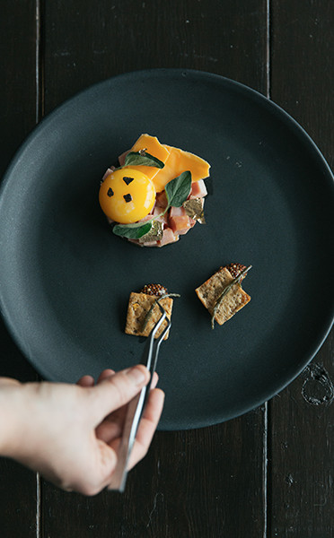
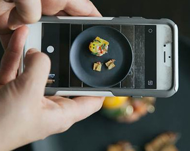
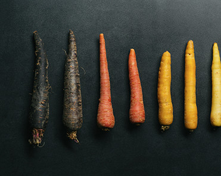

TASTE: A FIVE-SENSE EXPERIENCE
Our visual senses provide up to 28% of our taste experiences. This is a theory Instagram chief Jacques la Merde takes to the extreme. Serving up exquisite tasting plates
- in fact made from gas statin ingredients
- to her thousands of followers, she demonstates how visual techniques affect our perception of food
FOOD THAT LOOKS IT'S BEST
Enhance the flavour of your food by using a variety of colours and shapes to entice the eyes.